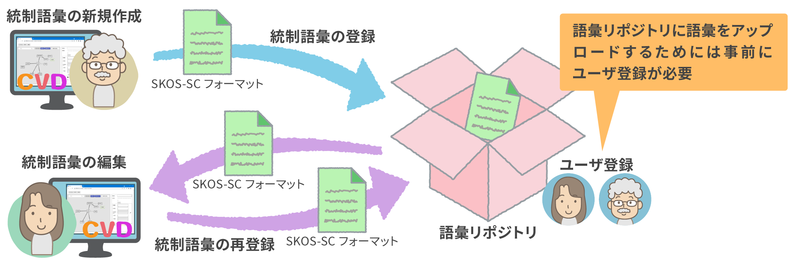
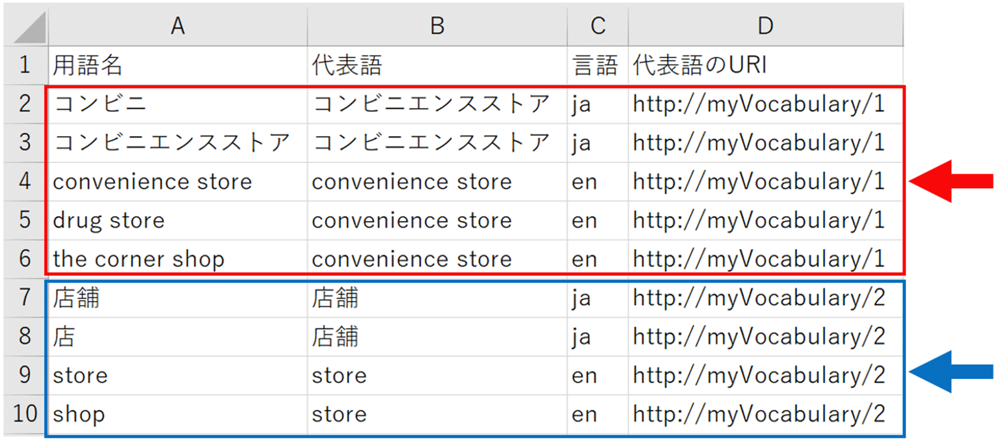
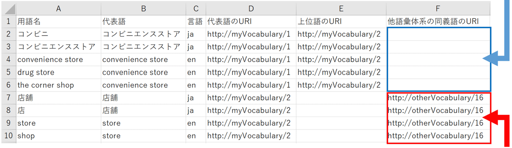
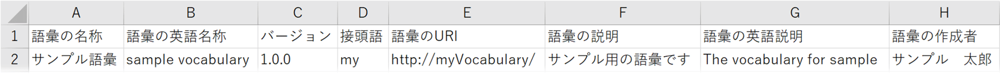

用語解説
SKOS-SC（SKOS Subset CSV）フォーマット
RDFなどの知識処理に精通していないユーザーでも、理解が容易にできるよう設計されている語彙のCSVフォーマット。
語彙リポジトリ(下記)に格納するCSVファイルフォーマットでもある。
SKOS-SC（SKOS Subset CSV）フォーマットは以下の2種類。
- 統制語彙の各用語間の関係性について記述したデータ。（以降、「SKOS-SC 用語一覧」とする）
- 統制語彙の名称や作成者について記述したメタデータ。（以降、「語彙基本情報」とする）
統制語彙作成支援ツール（CVD: Controlled Vocabulary Designer）
分野の統制語彙の作成を支援するWEBアプリケーション。
- より詳しい説明
- SIP分野間データ連携基盤のWEBページ「統制語彙作成支援ツール」（https://sip-cyber-x.jp/overview/o002）
- ソースコード
- https://github.com/fujitsu/controlled-vocabulary-designer（OSSとして公開済み）
語彙リポジトリ
語彙を収集するリポジトリ（データやファイルなどを一元的に管理する格納場所）で、語彙を自由に登録、検索、参照することが可能。
- より詳しい説明
- SIP分野間データ連携基盤のWEBページ「語彙リポジトリ」（https://sip-cyber-x.jp/overview/o003）
CVDと語彙リポジトリとSKOS-SCフォーマット
▼CVDと語彙リポジトリの間でのSKOS-SCフォーマット連携イメージ
統制語彙の作成・編集は、CVDを使用せずにExcelでSKOS-SCフォーマットのファイルを編集する事も可能。以降の説明は Excelを使用してSKOS-SCフォーマットのファイルを編集する場合の補足。
「SKOS-SC 用語一覧」について
 ▲「SKOS-SC 用語一覧」記述例
▲「SKOS-SC 用語一覧」記述例
各列についての解説
「用語名」列
- 当該分野の用語一覧
- 各行に1つずつ、重複なしで記述する
1行ずつ重複なしで記述

「代表語」列
- 当該分野の用語間に同義語があった際に、表記上それらを代表する用語
- 簡易ファイルフォーマット記述例では、「コンビニ」と「コンビニエンスストア」の代表語がいずれも「コンビニエンスストア」となっている。これは、「コンビニ」と「コンビニエンスストア」が同義語であり、代表語が「コンビニエンスストア」であることを表現している。

同義関係の用語がある場合はこのように重複して同じ代表語を記述する
- 代表語は、同義関係の用語の中から1つ選んで記述する。この例では、代表語が「コンビニ」と「コンビニエンスストア」のいずれかを記述し、それ以外の用語は記述してはいけない。
- 同義語が無い用語は、その用語自身を代表語とするため、代表語列に用語名を記述する。
「言語」列
- 当該分野の用語の言語情報
- 用語が日本語の場合は“ja”、英語の場合は“en”を記述する（それ以外の言語は未対応）。
- 同義関係の用語は、言語ごとに代表語を統一する

言語が“ja”の代表語は“コンビニエンスストア”
言語が“en”の代表語は“convenience store”
「代表語のURI」列
- 当該分野の用語の代表語が持つユニークな値
- 語彙自体のURI+代表語のIDで表現される（IDは数字以外でもOK）
- ※語彙自体のURIは、「語彙基本情報」の語彙のURIと同一

- 語彙自体のURI、代表語のIDの表現方法に特に制限はない（語彙自体のURIと代表語のIDの境界はバックスラッシュで記述すること）
- 代表語のURIは、記述必須
- 代表語のURIは、同義関係の用語については全て同じ値を記述する

- 以下は同義語である
- コンビニ
- コンビニエンスストア
- convenience store
- drug store
- the corner shop
- 以下は同義語である
- 店舗
- 店
- store
- shop
「上位語のURI」列
- 当該分野の用語の上位語の代表語のURI
- 同義関係の用語については同じ「上位語のURI」を記述する
- 上位語が存在する場合のみ記述する（省略可能）
代表語のURIがhttp://myVocabulary/1である用語たち（「コンビニ」など）の上位語は、代表語のURIがhttp://myVocabulary/2である用語たち（「店舗」など）である
代表語のURIがhttp://myVocabulary/2である用語たち（「店舗」など）の上位語は特に無いので、記述が無い

「他語彙体系の同義語のURI」列
- 当該分野の語彙とは別の語彙で同義関係である用語のURI
- 同義関係の用語については同じ「他語彙体系の同義語のURI」を記述する
- 別の語彙で同義関係の用語が存在する場合のみ記述する（省略可能）
代表語のURIがhttp://myVocabulary/2である用語たち（「店舗」など）の「他語彙体系の同義語のURI」はhttp://otherVocabulary/16である（わかるのはURIだけであって、それ以外の情報はない）
代表語のURIがhttp://myVocabulary/2である用語たち（「コンビニ」など）の他語彙体系の同義語は無いので記述が無い

「用語の説明」列
- 当該分野の用語についての説明
- 同義関係の用語については、言語ごとに同じ用語の説明を記述する
- 省略可能

同義語「コンビニ」「コンビニエンスストア」の用語の説明
同義語「store」「shop」の用語の説明は無し
同義語「店舗」「店」の用語の説明は無し
同義語「convenience store」「drug store」「the corner shop」の用語の説明
「語彙基本情報」について
▼「語彙基本情報」記述例

各列についての解説
「接頭語」列
- 統制語彙のURIを簡略化した表現方法
- 統制語彙をRDFとして記述する際に接頭語を使って記述できるため、長いURIの文字列を何度も使わずに簡略化できる
「語彙の説明」列
- 統制語彙の日本語説明
- 統制語彙に関する説明を記述する
「語彙の英語説明」列
- 統制語彙の英語説明
- 統制語彙に関する説明を英語で記述する

 CVDのダウンロード
CVDのダウンロード